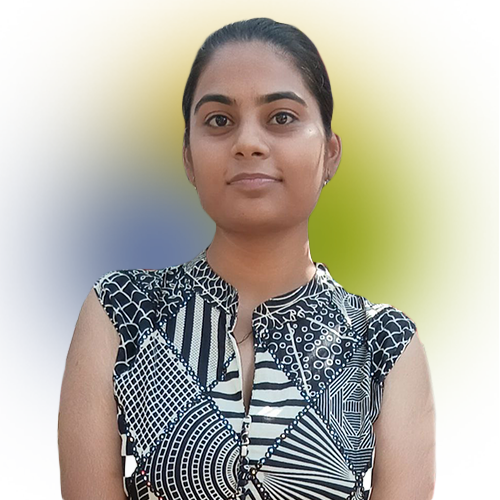
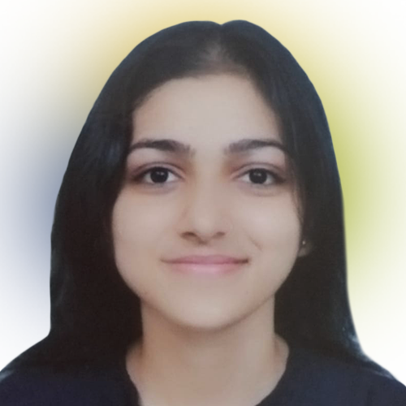
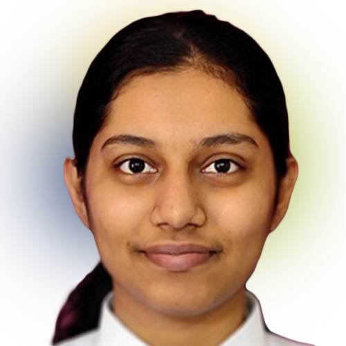

Meet our WISE Trainees
2025

Apoorva Singh
Economics and Public Policy Scholar, University of York

Lucy Grace Tang
M.A. in Social Work, Tata Institute of Social Sciences

Kaushiki Ishwar
Young India Fellow, Ashoka University

Prerana Rajesh Tiwari
M.A. in Politics, University of Mumbai

Salony Kumari
Political Science Student, Lady Shri Ram College for Women

Roshni Veronika Mallick
M.A. in Public Policy Student, NLSIU Bengaluru

Muskan Punia
M.A. in Politics and International Studies, JNU

Navneedhi Meena
Economics Graduate, Miranda House

Rituparna Shekhar
Fellow, Teach For India

Yukti Kapil
Political Science Graduate, Miranda House

Samyuktha Anuram
Law Student, Gujarat National Law University

Harshita Gupta
Undergraduate Student, Mount Carmel College

Vidhi Sharma
M.A. in Culture, Society and Thought, IIT Delhi

Pranjal Chauhan
M.A. in Gender Studies Student, Ambedkar University

Jigmet Norzin
M.A. in Political Science, Panjab University

Rashmika Sharma
Sociology Major & Policy in Action Fellow

Sandra Maria Varghese
Third-year Law Student

Anoushka Purohit
Political Science Graduate, University of Delhi

Thenthamizh S S
Undergraduate Economics Student

Santhiya M
Political Science Undergraduate, Madras Christian College

Garvita Maheshwari
M.A. in Management Student, IIM Indore